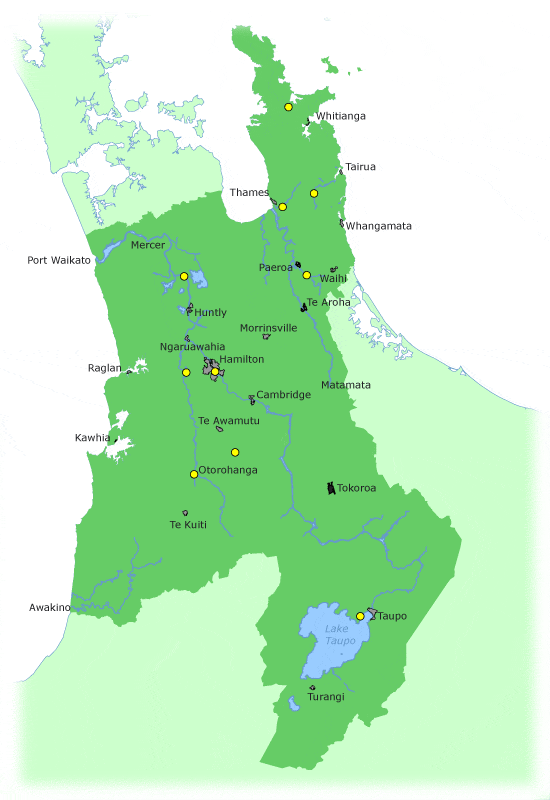

WAIKATO REGION
The Waikato region lies in the upper North Island of New Zealand, surrounded by ranges and bordered on its wild west coast by the Tasman Sea. The region is composed of 11 territorial authories. Hamilton City, Waikato District, South Waikato District, Waipa District, Thames-Coromandel District, Matamata-Piako District, Waitomo District (part), Otorohanga District, Hauraki District, Taupo District (part), and Rotorua District (part).
The region's name is taken from the Waikato River. Waikato is a Maori word. It is translated as "flowing water", "wai" means "water" and "kato" means "the pull of the river current in the sea".
